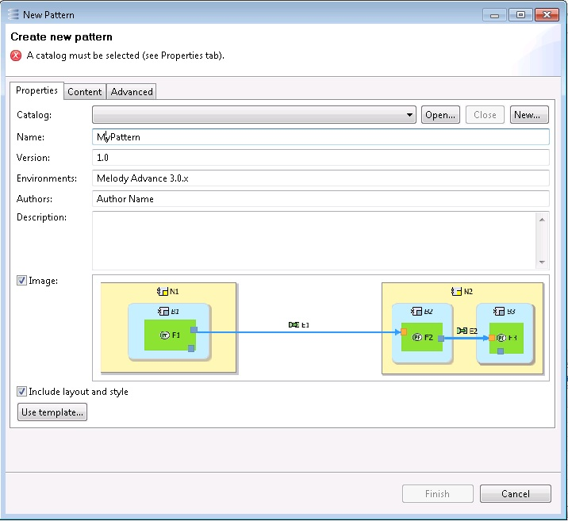
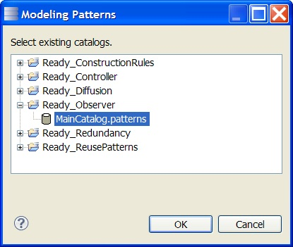
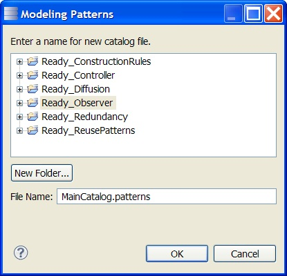

Creation Wizard Tab 1: Pattern Properties
When the 'Create pattern…' menu item is clicked, the first tab of the Pattern Creation wizard pops up. This tab aims at specifying a name, a catalog and metadata for the new pattern. If there are several authors or environments, they should be separated by commas or semicolons.
An image may be included for the sake of documentation: it is composed of the shapes graphically selected by the user in the diagram, if any. Additionally, the layout and style of those shapes may be remembered so that they can be reused when the pattern is being applied.
The meaning of the 'Use template' button can be ignored at this time; it is explained in
section 'Templates' .

Patterns are stored in files called 'catalogs' whose names end with '.patterns'. To specify in which catalog the new pattern shall be stored, the following buttons are available:
'Open': opens an existing catalog which is in the workspace. A dedicated dialog pops up displaying all the catalogs in the workspace. Note that once a catalog is open, its patterns become available and can be applied.

'New': creates a new, empty catalog. A dialog pops up that allows defining a path in the workspace for the new catalog.

'Close': closes the selected catalog. The patterns of the catalog cannot be used until the catalog is re-opened.
If the purpose of the pattern is solely to reuse the selected elements, then the wizard can be finished immediately via the 'Finish' button. If the pattern is more complex, then the other tabs of the dialog must be considered.